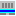

Windows apps
 PC Display Off
PC Display Off
- 実行ファイル名
- dispoff.exe
- 機能
- ディスプレイの電源を切る
Suspend PC
- 実行ファイル名
- suspend.exe
- 機能
- PC をスリープする
 Suspend PC Timer
Suspend PC Timer
- 実行ファイル名
- sustimer.exe
- 機能
- 指定時間後に PC をスリープ状態にする
- 操作方法
- コマンドラインで
sustimer.exe 1:00:00 と指定して実行すると 1 時間後に PC がスリープ状態になる。無指定なら 60 秒。実行後は、カウントダウンが表示される。中止するには、どこかをクリックする。または、次のキーを押す: Esc か Enter か スペース
コマンドライン オプション
- /a
- awake モード。Windows の設定による「指定時間経過後のスリープ及び画面電源オフ」を抑制する。カウントダウンが 0 になるまでの間ずっと PC を目覚めさせておく場合に使用する
 NEMTimer
- 実行ファイル名
- nemtimer.exe
- 機能
- 指定時間後に PC をスリープ状態にする
- 説明
- 上記 "Supend PC Timer" のダイアログ版。GUI で待機時間やオプションを設定してタイマーを開始する。コマンドラインで
nemtimer.exe 1:00:00 と指定して実行することもできる。メニューの「名前を付けて保存」で、現在の設定値でタイマーを開始するためのショートカットを作成できる。
- コマンドライン オプション
- /a, /deep などがある。「名前を付けて保存」で作成したショートカットのプロパティ＞ショートカット＞リンク先にて確認できる
 fulldraw
fulldraw
- 実行ファイル名
- fulldraw.exe
- 機能
- フルスクリーンお絵かきソフト
- 操作方法
- 線のサイズを調整するには、キーボードの ↑ か ↓ を押し、ペンタブの筆圧の感度を調整するには ← か → を押す。どこかを右クリックするとメニューが出る